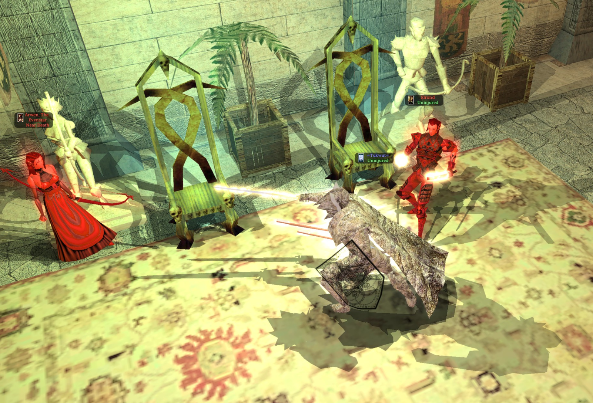

Elrond

★ Server First: first slain by Banker of the Marauders [y a z k i r] on 2026-06-16 16:24:07.
Kills
| Total | Solo | Party |
|---|---|---|
| 1 | 1 | 0 |
Top Killers
| # | Player | Character | Solo | Party | Total | Last Kill |
|---|---|---|---|---|---|---|
| 1 | y a z k i r | Banker of the Marauders | 1 | 0 | 1 | 2026-06-16 |
Where to find
Not placed in any area.
Abilities
| Str | 95 (+5 item) | Dex | 57 (+2 racial) | Con | 23 (-2 racial, +5 item) | Int | 45 | Wis | 45 | Cha | 45 |
|---|
Classes
| Class | Level |
|---|---|
| WeaponMaster | 16 |
| Ranger | 60 |
| Fighter | 10 |
Combat
| HP | 8,545 | AC | 80 (10 base + +23 Dex + +2 natural (NaturalAC) + +6 armor + +10 armor enchant + +2 shield + +8 shield enchant + +7 dodge (items) + +4 dodge (haste) + +8 dodge (Tumble, 40 ranks)) | BAB | +36 |
|---|---|---|---|---|---|
| Fort | +6 | Ref | +23 | Will | +23 |
AC extras: +10 AC Bonus, +8 AC Bonus
Saves shown = stored bonus + ability mod + item bonuses (Saving Throw Bonus: Specific); class-table progression and feat bonuses (Great Fortitude, etc.) are applied at runtime.
Equipment combat properties (combined)
| AC Bonus (Dodge, items) | +7 |
|---|---|
| Save vs. Will | +6 |
| Ability Bonuses | Constitution +5, Strength +5 |
| Skill Bonuses | Disable Trap +12, Hide +12, Listen +12, Lore +10, Move Silently +12, Search +12, Set Trap +10, Spot +12 |
| Damage Resistance | Acid 30/-, Cold 10/-, Divine 5/-, Electrical 25/-, Fire 30/-, Piercing 25/-, Positive 5/-, Slashing 25/-, Sonic 10/- |
| Damage Reduction | Soak10, bypass +5 |
| Damage Immunity | Bludgeoning (10%), Piercing (50%), Positive (10%), Slashing (50%) |
| Misc Immunity | Critical Hits, Death Magic, Disease, Fear, Knockdown, Level/Ability Drain, Mind-Affecting Spells, Paralysis, Poison |
| Immunity: Spells | Blindness/Deafness, Dominate Monster, Dominate Person, Harm, Improved Invisibility |
| Regeneration | +12 HP/round |
| Regen: Vampiric | +2 HP/hit |
| Misc Abilities | Haste (+4 dodge AC, factored into main AC), Freedom of Movement, True Seeing |
Dodge AC and save bonuses are factored into the main combat stats above. Dodge AC stacks (cap +20); haste adds +4 more (separate). All other same-type bonuses do not stack — only the highest is shown. Regeneration stacks without limit.
Weapons
| Slot | Item | Base | Type | Attack schedule | Damage | Crit |
|---|---|---|---|---|---|---|
| Right hand | Longsword of Elrond | longsword | Melee | +92/+87/+82/+77 | 1d8+42 (43–50) + Damage Bonus Divine 2d10, Damage Bonus Electrical 2d10, Damage Bonus Slashing 14, Massive Criticals 2d12 | 19-20/x2 |
Spells
Special abilities
| Spell/ability | Caster level | Uses |
|---|---|---|
| Deflecting Force | 0 | 3/day |
Equipment
| Slot | Item | Lootable |
|---|---|---|
| Chest | Elrond's Battle Armor | Yes |
| Boots | Boots of the Rivendell Ranger | Yes |
| Right hand | Longsword of Elrond | Yes |
| Left hand | Shield of Elrond | Yes |
| Right ring | Arrow of the Orc Defender | No |
| Creature hide | RivendellBuff | No |
Inventory (7)
| Item | Item Type | Lootable | Pickpocketable |
|---|---|---|---|
| Sword of the Elfenlight | katana | No | Yes |
| Potion of Heal | Potions | No | No |
| Potion of Heal | Potions | No | No |
| Potion of Heal | Potions | Yes | No |
| Celestial Fury | katana | Yes | No |
| Greater Ring of Power | Rings | Yes | No |
| Amulet of Natural Armor +7 | Amulets | Yes | No |
Feats (35)
- Ambidex
- AnimalCompanion
- ArmProfHvy
- ArmProfLgt
- ArmProfMed
- CmbtCast
- CShot
- Dodge
- Familiar
- FE_Aberration
- FE_Dragon
- FE_Giant
- FE_Goblinoid
- GreatFort
- hardinessenchantment
- immunitysleep
- ImpCritLongBow
- ImpTwo
- keensense
- LowLightVision
- PBShot
- Shield
- skillaffinitylisten
- skillaffinitysearch
- skillaffinityspot
- SpellFocusEvo
- SpellPen
- TracklessStep
- TwoWeap
- WeapFinesse
- WeapFocLgMace
- WeapProfElf
- WeapProfEx
- WeapProfMar
- WeapProfSim
Skills
| Skill | Ranks |
|---|---|
| Animal Empathy | 20 |
| Concentration | 23 |
| Discipline | 66 |
| Listen | 20 |
| Lore | 1 |
| Parry | 65 |
| Search | 44 |
| Spellcraft | 45 |
| Spot | 80 |
| Tumble | 40 |
Scripts
| Event | Script |
|---|---|
| ScriptHeartbeat | nw_c2_default1 |
| ScriptOnNotice | nw_c2_default2 |
| ScriptEndRound | nw_c2_default3 |
| ScriptDialogue | nw_c2_default4 |
| ScriptAttacked | nw_c2_default5 |
| ScriptDamaged | nw_c2_default6 |
| ScriptDeath | nw_c2_default7 |
| ScriptDisturbed | nw_c2_default8 |
| ScriptSpawn | nw_c2_default9 |
| ScriptRested | nw_c2_defaulta |
| ScriptSpellAt | nw_c2_defaultb |
| ScriptUserDefine | nw_c2_defaultd |
| ScriptOnBlocked | nw_c2_defaulte |